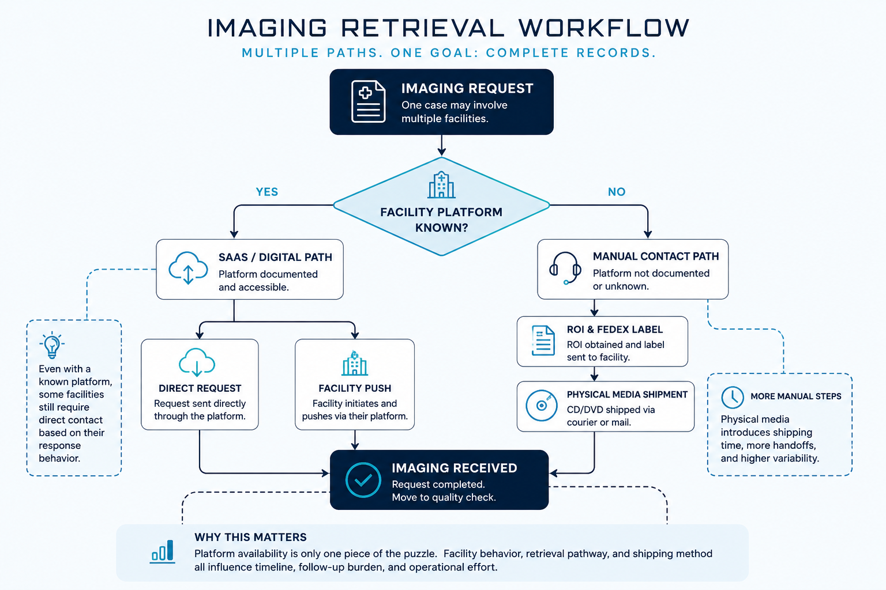

IMAGING RETRIEVAL OPERATIONS
A Workflow and Data Analysis
of Diagnostic Imaging Retrieval
How platform availability, facility behavior, and retrieval pathways shape operational effort, turnaround, and workflow complexity.
THE OPERATIONAL PROBLEM
Diagnostic imaging retrieval is not a single standardized workflow. The retrieval path changes depending on whether a facility has a documented imaging platform, how reliably that facility responds, and whether imaging can be transferred digitally or must be shipped on physical media.
A single case may also require imaging from multiple facilities, meaning several retrieval requests can move through different pathways, timelines, and follow-up cycles at the same time.

FROM WORKFLOW TO REQUEST-LEVEL MODELING
The original project treated imaging retrieval mainly as a comparison between digital and physical retrieval methods. As the workflow was mapped in more detail, that model proved too simple.
A single case can require imaging from multiple healthcare facilities, and each facility may follow a different retrieval pathway, use a different imaging platform, and progress through its own follow-up cycle.
The redesigned relational model therefore centers on the individual imaging request rather than the case alone, allowing retrieval activity to be tracked at the level where the operational work actually occurs.
WHAT THE MODEL IS DESIGNED TO EXPLORE
PLATFORM COVERAGE
How facility access to SaaS imaging platforms changes the retrieval pathways available to the operations team.
FACILITY BEHAVIOR
How differences in facility response patterns affect manual outreach, follow-up activity, and retrieval workload.
PHYSICAL-MEDIA FRICTION
Where facility processing, shipment method, and physical-media handling introduce additional time and variability into retrieval.
WORKLOAD CONCENTRATION
Which facilities, retrieval pathways, and request characteristics generate disproportionate operational effort.
PROJECT EVOLUTION
The project began as a small comparison of SaaS-based and physical-media imaging retrieval. Mapping the workflow exposed a more complex operational system than the original model could represent.
The project was rebuilt around request-level activity, facility-to-platform relationships, retrieval-event history, physical shipments, and the independent progression of multiple imaging requests within the same case.
The current phase uses Python to generate a reproducible 12-month synthetic operational environment that can be loaded into MySQL for validation, exploratory analysis, and future scenario modeling.
TECHNICAL IMPLEMENTATION
MySQL · Python · Relational Data Modeling · Synthetic Data Generation
The project uses Python to generate a reproducible synthetic operational dataset and MySQL to model the relationships between patients, cases, facilities, imaging platforms, imaging requests, retrieval events, and physical shipments.
Supporting documentation defines the current-state workflow, business rules, relational model, and assumptions governing synthetic data generation.
Version controlled with Git + GitHub
VIEW PROJECT ON GITHUB →